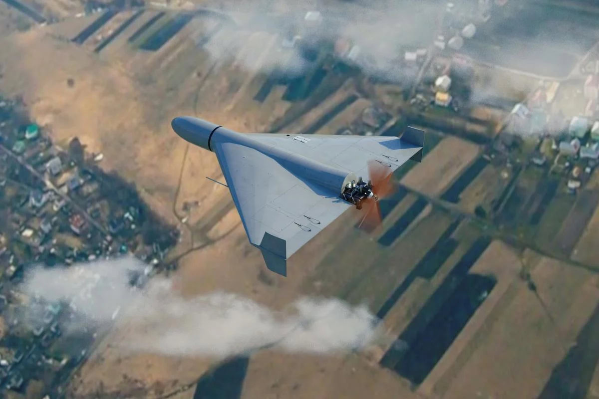

Шахід це зброя для масового руйнування
це баражуючий боєприпас іранського виробництва, який часто називають дроном-камікадзе. Його головна мета — ураження наземних цілей на великих відстанях шляхом прямого зіткнення з об'єктом. Основні характеристики Shahed-136
- Довжина: 3,5 метра
- Розмах крил: 2,5 метра
- Злітна вага: близько 200 кг
- Бойова частина: вибухо-осколкова, масою від 40 до 50 кг (у пізніших модифікаціях до 90 кг)
- Швидкість польоту: 150–180 км/год (деякі модифікації в піку розвивають до 400 км/год)
- Дальність польоту: до 2000–2500 км
- Двигун: бензиновий Mado MD-550 потужністю 50 к.с., який створює характерний гучний звук, схожий на роботу мопеда або газонокосарки
- Навігація: супутникова та інерціальна система